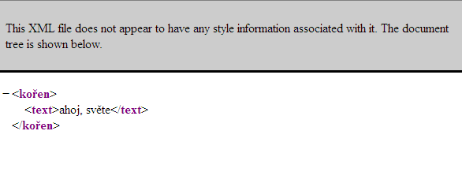
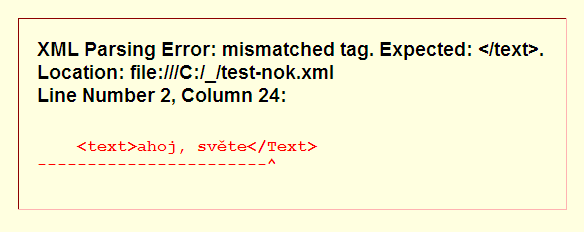

Více o XML
by Jiří Znamenáček
Úvod
V přednášce základy XML jsme se dozvěděli prakticky všechno, co je potřeba k práci s XML. XML ale kromě toho obsahuje i další, podstatně exotičtější prvky (zakopli jsme kupříkladu o tzv. řídicí sekvence), se kterými se nemusíte potkat moc často, ale je třeba o nich vědět.
Začátek XML-dokumentu I
Na začátek zdánlivě jednoduché, ale často problémové pravidlo:
Pokud prvním elementem XML-dokumentu je XML-hlavička <?xml version="…" encoding="…"?>, nesmí před ní být žádné tisknutelné znaky.
Po pravdě ve standardu je použito neměly by být, ale spousta nástrojů se na jiném začátku XML-dokumentu beznadějně zasekne, takže je bezpečnější se tohoto pravidla držet. Ostatně validační nástroje vás na to upozorní.
Začátek XML-dokumentu II
Na druhou stranu pokud má XML-dokument hlavičku <?xml …?>, mezi ní a kořenovým elementem může být hromada dalších řídicích instrukcí typu <!…> i <?…?>, jak dokazuje například tento soubor ze zdrojových kódů prohlížeče Mozilla Firefox:
omni.ja/chrome/toolkit/content/global/selectDialog.xul.
Povolené znaky I
Jednodušší varianta:
Obsahem XML-dokumentu (a to i názvů elementů a atributů) může být téměř libovolný smysluplný tisknutelný unicodový znak. Pochopitelně na názvy elementů a atributů jsou kladena jistá (celkem standardní) omezení.
Konkrétně (vaše vlastní) názvy nesmí začínat na libovolně zkapitalizovanou verzi řetězce xml, kromě označení jmenného prostoru nesmí obsahovat dvojtečku a název smí začínat (a z větší části obsahovat) pouze na „písmeno“.
Povolené znaky II
Komplikovanější varianta:
- XML 1.0 povoluje znaky U+09, U+0A, U+0D, U+20 až U+D7FF, U+E000 až U+FFFD a U+10000 až U+10FFFF;
- XML 1.1 navíc povoluje použít i všechny zbývající znaky z U+01 až U+1F, ale kromě U+09, U+0A, U+0D a U+85 pouze v jejich iskejpované formě.
Iskejpování znaků – předdefinované entity
Následující dva znaky jsou klíčové syntaktické prvky XML, a pokud se mají objevit v jeho obsahu (textu), musí být náležitým způsobem odiskejpovány:
-
< se přepisuje jako
< -
& se přepisuje jako
&
Z důvodů symetrie a použití ve speciálních případech (např. uvozovky uvnitř uvozovek) jsou definovány i následující iskejp-sekvence:
-
> přepisováno jako
> -
" přepisováno jako
" -
' přepisováno jako
'
Iskejpování znaků – číselné entity
Kromě toho je možné každý jiný povolený znak zapsat jako tzv. číselnou entitu pomocí schematu
&#DecimálníČíslo;respektive&#xHexadecimálníČíslo;
kde uvedené číslo je odkaz do unicodové tabulky na příslušný znak.
To mimo jiné umožňuje používat i znaky, které zrovna nemáte možnost napsat přímo – například japonský znak pro „ookami“ ve všech třech podobách vypadá takto:
狼
狼
狼
Komentáře v XML
Komentáře v XML se zapisují pomocí řídicí sekvence <!--…-->. Přitom ukončovacím znakem komentáře není sekvence -->, ale pouze sekvence --, proto se uvedené dva znaky nesmí nikde v komentáři vyskytnout!
Jelikož komentář kompletně „odstřelí“ svůj vnitřek od procesování pomocí XML-parserů, jsou v něm snad nepřekvapivě povoleny i jinak zakázané znaky < a &:
<!-- <značky> & podobné věci není třeba uvnitř komentářů iskejpovat -->
PS: XML-parser může podle svého uvážení komentáře buď zcela zahodit nebo je uživateli poskytnout (typicky jako dále nijak nezpracovaný řetězec).
Iskejpování značek
Specifickým použitím řídicí sekvence <!…> je blok <![CDATA[…]]>. Stručně řečeno umožňuje uvnitř sebe zapsat XML jako XML (tj. bez iskejpování), aniž by se ovšem jako XML vyhodnotilo. Narozdíl od XML-komentářů jsou ale CDATA-bloky předávány k dalšímu zpracování. Příklad:
<example>
<![CDATA[ <aaa>bb&cc<<<]]>
</example>
Za uzavírací sekvenci je považován celý řetězec ]]>, proto se nesmí nikde uvnitř bloku CDATA vyskytnout.
Zanoření DTD
Z historických důvodů (návaznost na SGML) obsahuje standard XML i základní popis jeho struktury pomocí tzv. DTD a způsob, jak tento popis připojit přímo k dokumentu. Toto vše je popsáno pomocí sady speciálních příkazů využívajích také řídicí sekvenci <!…>, přičemž je vše zanořeno v řídicím „elementu“ <!DOCTYPE …>.
Jelikož DTD je věnována samostatná kapitola, zde se o něm nebudeme více zmiňovat.
Procesní instrukce
Procesní instrukce <?…?> (tzv. PIs) se používají ve dvou základních případech:
- jako řídicí instrukce pro XML-parser;
- jako dodatečné instrukce pro libovolné jiné aplikace.
Ty první z nich je třeba znát a jsou definovány buď přímo ve standardu XML nebo ve standardech s ním souvisejících. Ty druhé se liší aplikaci od aplikace a možná je nikdy ani neuvidíte.
Procesní instrukce XML-parseru
Samotný standard XML definuje jedinou procesní instrukci, a to XML-hlavičku:
<?xml version="1.1" encoding="win-1250"?>
Standardy související pak definují další, například:
<!-- připojení stylopisu uvedeného formátu -->
<?xml-stylesheet href="stylopis.css" type="text/css"?>
<!-- připojení validačního stylu uvedeného formátu -->
<?xml-model href="xhtml.rnc" type="application/relax-ng-compact-syntax"?>
PS: Celkem pochopitelně byste mohli býti v pokušení hledat procesní instrukci na připojení programu (kupříkladu v jazyce JavaScript). Jenže nic takového není, XML je primárně datový formát. Ovšem pomocí jmenných prostorů se k němu skript přesto přidat dá, a to zápůjčkou z XHTML:
<script xmlns="http://www.w3.org/1999/xhtml" src="skript.js" />
Jiné procesní instrukce
Všechny další možné procesní instrukce už spolupracují přímo s konkrétními aplikacemi, které zpracovávají dané XML, pro jejich význam se tedy musíte podívat tam. Ukázka:
<?perl lower-to-upper-case ?>
<?web-server add-header="university"?>
Kontrola správnosti XML
Z předchozího je možná zřejmé, že kontrola správnosti XML-dokumentu je dvoustupňová:
-
správné formátování (well formedness) – kontrola správnosti dokumentu z hlediska standardu;
📝Aneb zda dokument vyhovuje základním pravidlům pro zápis XML – správně ukončené a v sobě pozanořované elementy, v neiskejpované podobě výskyt pouze povolených znaků a podobně.
-
validace – kontrola správnosti dokumentu z hlediska (jinde) nadefinované struktury.
📝Aneb zda dokument svojí strukturou vyhovuje svému popisu v příslušném schematu (většinou externím, ale v případě DTD může být i interní).
Uvedenou kontrolu zvládá přímo spousta XML-editorů (ať už dedikovaných nebo třeba i typu Emacs) a samozřejmě také spousta dalších externích nástrojů (typicky xmllint, ale třeba i takový Firefox).
Validátor „xmllint“
Validátor xmllint umí oba výše uvedené kroky (přičemž v tom druhém zvládá validaci proti DTD, RelaxNG, WXS a Schematronu). V tuto chvíli nás bude však zajímat především ten první.
Nejjednodušším způsobem volání je:
xmllint moje.xml
Protože však xmllint opisuje na výstup vstupní dokument (za použití některých přepínačů případně nějakým způsobem zpracovaný), je ve většině základních použití lepší zavolat kontrolu takto:
xmllint --noout moje.xml
Základní kontrola pomocí webových prohlížečů
Zobrazit nějakým způsobem XML zahrnuje také dva kroky:
- Základní požadavek standardu – při jakékoliv chybě ve struktuře XML zastavit jeho parsování, XML dále nezpracovávat a nijak nezobrazovat a nahlásit na výstup uvedenou chybu.
- Použít nějakých externě nadefinovaných pravidel (DSSSL, CSS, XSL…) pro převod XML na výstupní formát a ten zobrazit, jinak – pochopitelně – zobrazit pouze vlastní textové uzly.
Zatímco první požadavek splňují všechny webové prohlížeče (a většina nástrojů pro zpracování XML vůbec), druhého se drží čestná (a v tomto případě nepříliš užitečná) výjimka Safari. Všechny ostatní prohlížeče se shodly na tom, že chce-li uživatel (člověk!) vidět XML, bude ho spíše zajímat jeho (téměř) skutečná struktura, a proto aplikují na XML jistý výchozí způsob zobrazování.
Základní kontrola pomocí webových prohlížečů – „Mozilla Firefox“
Díky na předchozím slajdu popsanému chování můžeme webové prohlížeče s výhodou použít pro jednodušší základní kontrolu XML-dokumentů. Kupříkladu Mozilla Firefox zobrazí XML bez chyb (při nejmenším ve smyslu well-formed) takto..

..a v případě nějaké chyby vrátí hlášení o ní:
